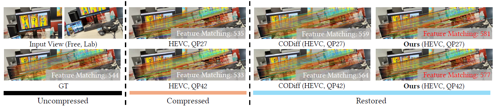
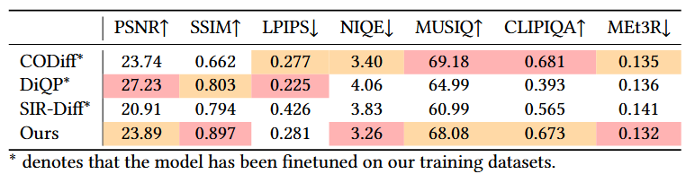
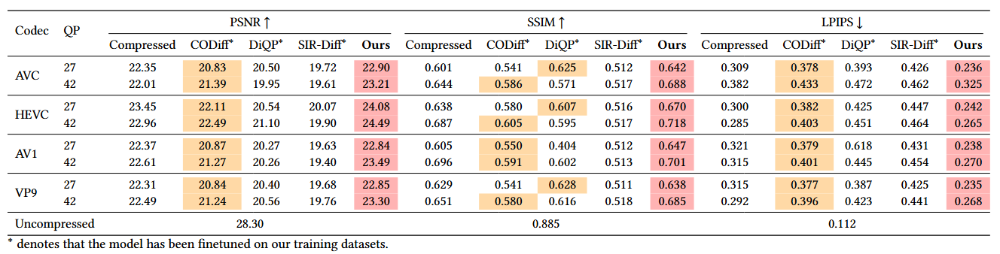
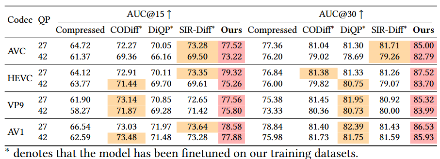
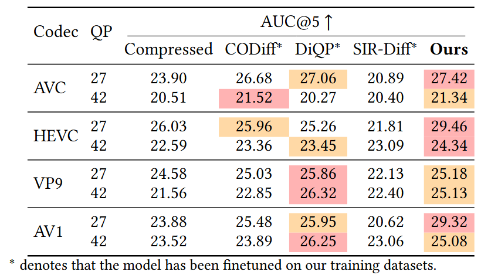
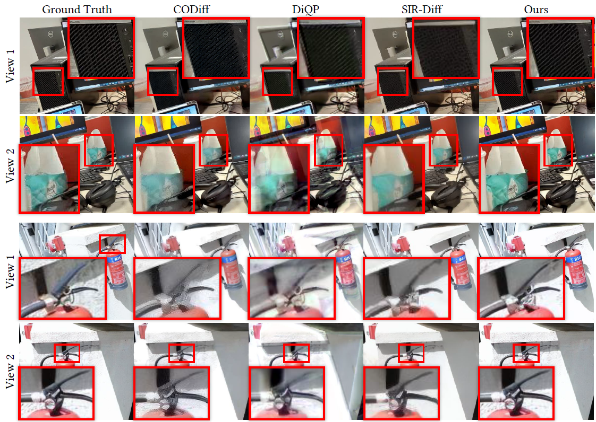
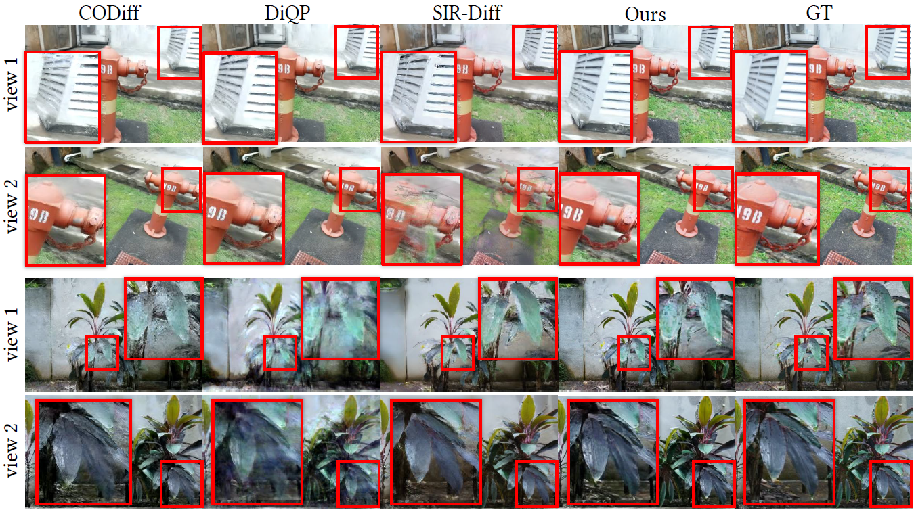
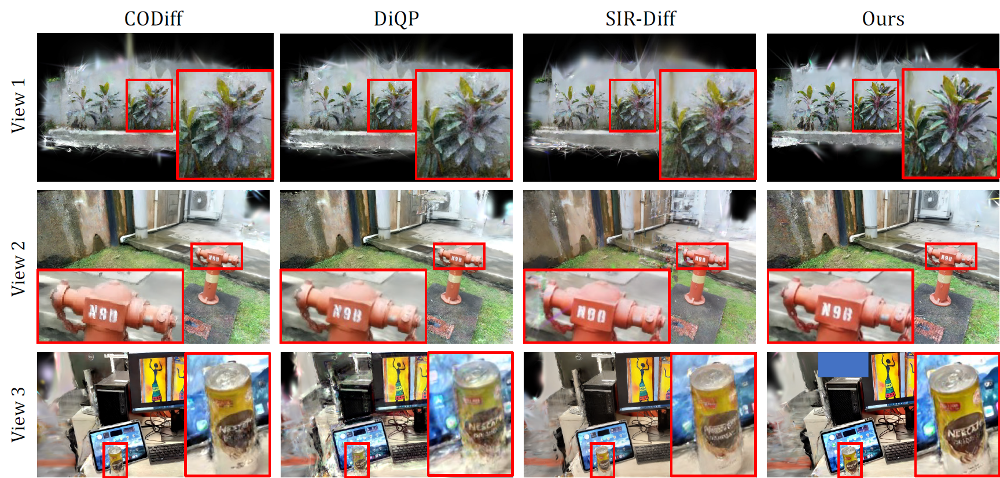

Abstract
Real-world 3D reconstruction pipelines often rely on multi-view images degraded by lossy compression. While compression artifacts have been extensively studied in single-image or video restoration, their impact on multi-view geometry remains largely overlooked. In this work, we identify compression-induced cross-view geometric inconsistency as a critical failure mode, where view-dependent artifacts disrupt feature matching, dense correspondence, camera parameter estimation, and downstream 3D reconstruction tasks such as novel view synthesis.
To address this problem, we propose CompMVR, a compression-aware multi-view diffusion restoration framework and compressed datasets that jointly refines compressed views while preserving cross-view consistency. Unlike conventional restoration methods that optimize each image independently for 2D perceptual quality, CompMVR leverages learned compression priors and cross-view correspondence to recover visual details while improving geometric reliability across views.
Experiments across diverse datasets, codecs, and compression levels demonstrate gains in restoration quality and downstream 3D tasks, including novel-view synthesis, camera pose estimation, and view matching. These results establish compressed multi-view restoration as a distinct problem and highlight its importance for 3D reconstruction under lossy compression.

Method

(a) In Stage 1, we learn a compression-aware latent representation by training a compression prior embedder. The latent is optimized through image reconstruction and supervision of coding parameters (codec type and QP). (b) In Stage 2, we perform multi-view restoration using a diffusion model conditioned on the learned compression prior. The latent is injected via cross-attention and fused with the UNet input, while a compression artifact estimator (CAE) predicts spatially varying residual maps for degradation-aware restoration. To enforce cross-view geometric consistency, we further apply a cross-view correspondence loss during training.
Experiments
Quantitative Results
2D Restoration

3D Downstream Tasks



Qualitative Results
2D Restoration

3D Novel-View Synthesis


BibTeX
{kim2026compmvr,
author = {Kim, Dong-hwi and others},
title = {CompMVR: Compression-Aware Multi-View Restoration Using Diffusion Models
for Geometrically Consistent 3D Reconstruction},
booktitle = {SIGGRAPH Asia 2026 Conference Papers},
year = {2026},
address = {Kuala Lumpur, Malaysia},
publisher = {Association for Computing Machinery},
doi = {10.1145/3829340.3842283},
isbn = {979-8-4007-2842-6}
}